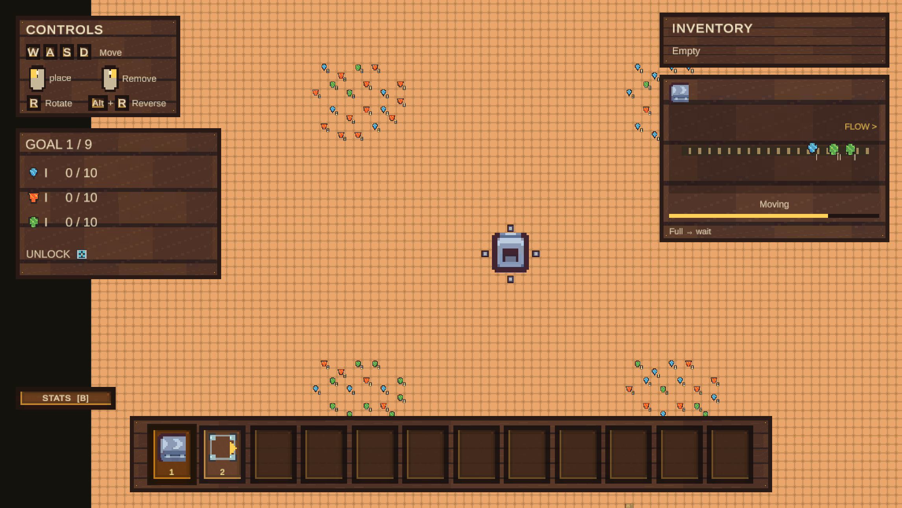
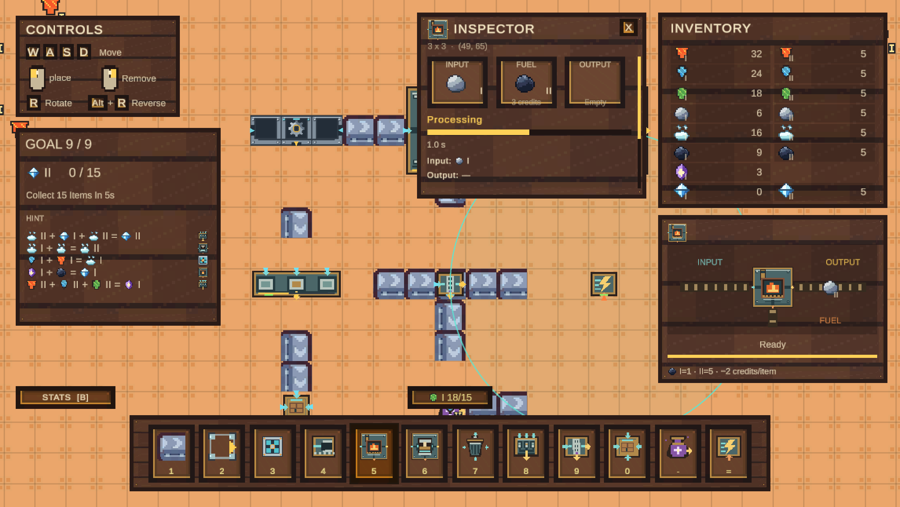

Production & logistics
Ordered recipes, exact material tiers, fuel credits, conveyor backpressure, tunnels, filters, and storage transfers. Queues preserve materials when a downstream route fills up.
P2 Gold · Featured project
A factory automation game about turning simple elements into intricate production chains.
Extract. Combine. Deliver. Find the right rhythm between the machines, the materials, and the next objective.
Single-player · Windows & macOS · Unity 6

01 / The project
Conveyors move materials. Extractors do the mining. Processing machines turn carefully routed inputs into the next element, while limited output space makes every connection matter.
Magic appears at tier I only.

Inside the loop
The Basic Assembler reads its left and right inputs in order. Furnaces and Pressurizers use separate fuel ports. The Triple Assembler adds a shared five-second clock.
A blocked output stays queued. Unsupported batches return their original inputs in order. The challenge is to build a chain that can keep moving.
02 / My contribution
Work on Elementary Factory spans the production logic and the interface players use to understand it.
Made with
Ordered recipes, exact material tiers, fuel credits, conveyor backpressure, tunnels, filters, and storage transfers. Queues preserve materials when a downstream route fills up.
Nine delivery objectives, progressive tool unlocks, and material construction costs. The final objective measures a real five-second delivery window; statistics show production, deliveries, and stored resources.
An icon toolbar, automatic component demonstrations, discovered-resource inventory, and machine inspectors. Camera controls and visible accelerator ranges make the factory easier to navigate and plan.
03 / More course work
Developed with Leo Liu
A recreation of the classic Zelda dungeon flow with a four-room custom challenge built around charged sword attacks.
My contributionI implemented the Gold custom level, charged sword mechanic, projectile barrage encounters, room progression, charge HUD, and in-game teaching cues.
04 / About
This portfolio brings together my EECS 494 game projects. Elementary Factory is the featured project, with work across game systems, player interaction, and interface design.
Try Elementary Factory
Windows and macOS builds in one download.
Extract the complete ZIP before opening the game.
The public download link is being prepared.